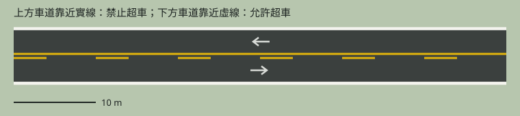

禁止超車線 第166條
禁止超車。

規格
| 類別 | 禁制標線 |
|---|---|
| 顏色 | 黃 |
| 線型 | 雙實線／實線配虛線 |
| 尺寸 | 雙向：雙黃實線，尺寸同分向限制線（線寬、間隔皆 10 公分）。單向：黃實線配黃虛線，虛線與實線間隔 10 公分。 |
意義
禁止超車。
設置地點
視距不足或接近交岔路口的路段。連續禁止超車路段間隔不足 120 公尺時，得視需要銜接設置。
跨越或通行
雙向型：兩側都禁止超車。單向型：實線一側禁止超車，虛線一側允許超車。
常見誤解
- 單向禁止超車線要看「離自己近的是實線還是虛線」，不是看整組線的顏色。
出處
道路交通標誌標線號誌設置規則（民國115年03月11日修正）第166條。全國法規資料庫原文
本頁為條文整理，用字以原文為準；標「整理說明」者為本站補充。最後更新：2026-11-13